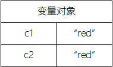

大多数开发者在使用Java或C#等基于类的语言的过程中学会了面向对象编程。由于JavaScript没有对类的正式支持，这些开发者在学习JavaScript时往往会迷失方向；
JavaScript不需要在开头就定义好各种类，你可以在写代码的过程中根据需要创建数据结；
由于JavaScript缺少类，也就缺少用于对类进行分组的包；
JavaScript把对象作为语言的中心，几乎所有JavaScript的数据要么是一个对象要么从对象中获取；
在JavaScript中也被视为对象，这使得它们成为JavaScript的一等公民；
用和理解对象是理解整个Javascript的关键，在学习之前，首先要学习鉴别和使用两种JavaScript基本数据类型：原始类型和引用类型。
JavaScript虽然没有类的概念，但依然存在两种类型：原始类型和引用类型；
原始类型保存为简单数据值；
引用类型保存为对象，其本质是指向内存位置的引用；
其他编程语言使用栈存储原始类型，用堆存储引用类型，JavaScript完全不同：它使用一个变量对象追踪变量的生存期；
原始值被直接保存在变量对象内，引用值则作为一个指针保存在变量对象内，该指针指向实际对象在内存中的存储位置。
JavaScript共有5种原始类型：
boolean布尔，值为true或falsenumber数字，值为任何整型或浮点数值
string字符串，值为单引号或双引号括出的单个字符或连续字符null空类型undefined未定义JavaScript和许多其他语言一样，原始类型的变量直接保存原始值。当你将原始值赋给一个变量时，该值将复制到变量中。也就是说，如果你使一个变量等于另一个时，每个变量有它自己的一份数据拷贝。
var c1 = "red"; var c2 = c1;
每个含有原始值的变量使用自己的存储空间，一个变量的改变不会影响到其他变量。
var c1 = "red"; var c2 = c1; console.log(c1); //"red" console.log(c2); //"red" c1 = "blue"; console.log(c1); //"blue" console.log(c2); //"red"鉴别原始类型
鉴别原始类型的最佳方法是使用typeof操作符。
console.log(typeof "Hello"); //"string" console.log(typeof 100); //"number" console.log(typeof 10.5); //"number" console.log(typeof true); //"boolean" console.log(typeof undefined); //"undefined" console.log(typeof null) //"object"当运行
typeof null时，结果是object。这实际上是一个错误，判断一个值是否为空类型的最佳方法是直接和null比较。console.log(value === null); //true or false原始方法
- 虽然string，number，boolean是原始类型，但是它们也拥有方法；
- 尽管原始类型拥有方法，但它们不是对象；
- JavaScript使它们看上去像对象一样，以此来提供语言上的一致性体验。
var name = "Tom"; var firsetLetter = name.chrAt(0); //get first character var lowercaseName = name.toLowerCase(); //convert to lowercase
- 引用类型是指JavaScript中的对象，同时也是在JavaScript中能找到的最接近类的东西；
- 引用值是引用类型的实例，也是对象的同义词；
- 对象是属性的无序列表；
- 属性包含键和值；
- 如果一个属性的值是函数，它就被称为方法；
- 在使用对象前，必须先创建他们。
创建对象
JavaScript有好几种方式可以创建对象，或者说实例化对象；
第一种是使用
new操作符和构造函数；构造函数是通过
new操作符来创建对象的函数，一般首字母大写，下列代码实例化一个通用对象；var object = new Object(); //实例化一个通用对象
引用类型不在变量中直接保存对象，所以上面例子中object变量实际上并不包含对象的实例，而是一个指向内存中实际对象所在位置的指针（或者说引用）；
当将一个对象赋值给变量时，实际是赋值给这个变量一个指针。这意味着，将一个变量赋值给另一个变量时，两个变量各获得了一份指针的拷贝，指向内存中的同一个对象。
对象引用解除
不使用对象时将其引用解除，让垃圾收集器对那块内存进行释放。解除引用的最佳手段是将对象变量置为null。
var obj = new Object(); obj = null; // 解除引用添加删除属性
在JavaScript中，可以在对象中随时添加和删除其属性。
var obj1 = new Object(); var obj2 = obj1; obj1.myProperty = "aaa"; console.log(obj2.myProperty); //"aaa"上面的例子演示了JavaScript一个独特的方面：可以随时修改对象，即使并没有在开始时定义它们。同时，后续会讲到如何阻止此类修改。
我们已经见过如何用
new Object()创建和使用通用对象。Object类型只是JavaScript提供的少量内建类型之一。其他内建类型各有它们的特殊用途，可在任何时候被实例化。
Array数组类型，以数字为索引的一组值的有序列表
Date日期和时间类型Error运行期错误类型Function函数类型Object通用对象类型RegExp正则表达式类型可以用
new来实例化每一个内建引用类型。字面形式
内建引用类型有字面形式。字面形式允许你在不需要使用
new操作符和构造函数显式创建对象的情况下生成引用值（言外之意就是：除了使用new构造函数创建对象还有一种字面形式的方式创建对象）。对象和数组字面形式
要用对象字面形式创建对象，可以在大括号内定义一个新对象及其属性；
属性的组成包括一个标识符或字符串、一个冒号及一个值；
多个属性之间用逗号分隔；
var book = { name:"JavaScript教程", year:"2019", price:34.5 }
- 属性名字也可以用字符串表示，特别是当你希望名字中包含空格或其他特殊字符时；
var book = { "name":"JavaScript教程", "year":"2019", "price":34.5 }上面两个例子的等价写法
var book = new Object(); book.name = "JavaScript教程"; book.year = "2019"; book.price = 34.5;
- 定义数组的字面形式是在中括号内用逗号区分任意数量的值。
var colors = ['red', 'blue', 'green']; console.log(colors[0]); //'red'等价于
var colors = new Array('red', 'blue', 'green'); console.log(colors[0]);函数字面形式
通常都要用函数的字面量来定义函数；
考虑到可维护性、易读性和调试上的巨大挑战，通常不会有人使用函数的构造函数。
function fun(value) { return value; } //is same as var fun = new Function("value", "return value;");
属性是对象中保存的名字和值的配对；
.是JavaScript中访问属性的最通用做法；var arr = []; arr.push(1000);也可以使用中括号访问JavaScript属性。
var arr = []; arr["push"](1000);
函数使用
typeof操作符时，返回值是function;非函数的引用
typeof操作符时，返回值是object；为了更方便的鉴别引用类型，使用
instanceof操作符；
对象的引用 instanceof 构造函数对象是构造函数所指定的类型的一个实例，
instanceof返回true;否则返回
false。var items = []; var object = {}; function fun(val) { return val; } console.log(items instanceof Array); //true console.log(object instanceof Object); //true console.log(fun instanceof Function); //true
instanceof操作符可鉴别继承类型，这意味着所有对象都是Object的实例，因为所有引用类型都继承自Object。var items = []; var object = {}; function fun(val) { return val; } console.log(items instanceof Object); //true console.log(object instanceof Object); //true console.log(fun instanceof Object); //true 每种引用类型的对象都被正确鉴别为Object的实例。
除了
instanceof可以鉴别数组，ECMAScript5引入了Array.isArray()来明确鉴别一个值是否为Array的实例。
- 原始封装类型共有3种（
String、Number、Boolean），这三种是引用类型;- 这些引用类型使得原始类型用起来和对象一样方便（类似于Java中的包装类）；
- 当读取字符串、数字或布尔值时，原始封装类型将被自动创建；
var name = "Tom"; var firstChar = name.charAt(0); console.log(firstChar); 等价于
var name = "Tom"; var temp = new String(name); var firstChar = temp.charAt(0); temp = null; console.log(firstChar);
- 手动创建的原始封装类型在其他地方很容易让人误解，在大多数情况下都只会导致错误。多数情况下，应避免使用原始封装类型。